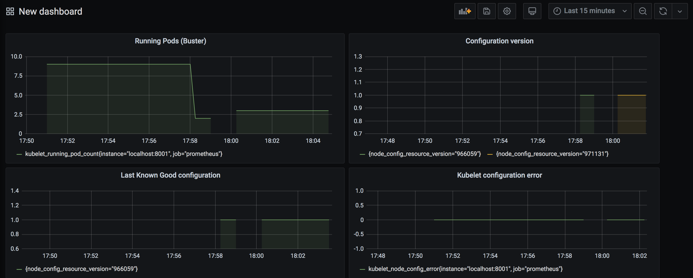

On Kubernetes 1.10+ a new way to configure Kubelet via YAML became v1beta1, the struct KubeletConfiguration become available via the –config flag. So most of the regular ones can be configured via this file. This approach is extensively used by kubeadm for setting up the installation as was noted in last post.
The idea of this post now is to do a code walkthrough and take a look in some KEPs and designs for the subsystem that reload this configuration at flight giving Kubelet a Dynamic Configuration capacity, this feature became beta on 1.11.
The combination of configuration provided via –config and any flags which override these values is considered the default "last known good" configuration by the automatic rollback mechanism.
According the official documentation some steps are necessary, they are:
In our already running environment lets add the flags to start using this feature.
$ mkdir -p /var/lib/kubelet/dynamic
$ ./_output/bin/kubelet
--bootstrap-kubeconfig=/etc/kubernetes/bootstrap-kubelet.conf \
--kubeconfig=/etc/kubernetes/kubelet.conf \
--config=/var/lib/kubelet/config.yaml \
--cgroup-driver=cgroupfs \
--network-plugin=cni \
--pod-infra-container-image=k8s.gcr.io/pause:3.2 \
--dynamic-config-dir /var/lib/kubelet/dynamicThe first initialization of this feature resides in:
cmd/kubelet/app/server.go:223
dynamicKubeletConfig, kubeletConfigController, err = BootstrapKubeletConfigController(dynamicConfigDir,func)This bootstrap created a new Controller, bootstrapping it. This is called before the StartSync call trying to get the last known configuration already existent.
To do this, the dynamic directory is created with meta and checkpoints subfolders, this will return nil for the first time, and use the local configuration.
We are going to come back to this when it the configuration restart.
We have the activation of the controller here if the dynamic configuration dir flag is passed:
// cmd/kubelet/app/server.go:771
// If the kubelet config controller is available, and dynamic config is enabled, start the config and status sync loops
if utilfeature.DefaultFeatureGate.Enabled(features.DynamicKubeletConfig) && len(s.DynamicConfigDir.Value()) > 0 &&
kubeDeps.KubeletConfigController != nil && !standaloneMode && !s.RunOnce {
if err := kubeDeps.KubeletConfigController.StartSync(kubeDeps.KubeClient, kubeDeps.EventClient, string(nodeName)); err != nil {
return err
}
}The main goroutines, launched are:
Attempts to sync the status with the Node object for the Kubelet,
This metric will handle possible errors in the status.
# HELP kubelet_node_config_active [ALPHA] The config source the node is actively using. The count is always 1.
# TYPE kubelet_node_config_active gauge
kubelet_node_config_active{node_config_kubelet_key="",node_config_resource_version="",node_config_source="local",node_config_uid=""} 1
# HELP kubelet_node_config_assigned [ALPHA] The node's understanding of intended config. The count is always 1.
# TYPE kubelet_node_config_assigned gauge
kubelet_node_config_assigned{node_config_kubelet_key="",node_config_resource_version="",node_config_source="local",node_config_uid=""} 1
# HELP kubelet_node_config_last_known_good [ALPHA] The config source the node will fall back to when it encounters certain errors. The count is always 1.
# TYPE kubelet_node_config_last_known_good gauge
kubelet_node_config_last_known_good{node_config_kubelet_key="",node_config_resource_version="",node_config_source="local",node_config_uid=""} 1
# HELP kubelet_node_config_error [ALPHA] This metric is true (1) if the node is experiencing a configuration-related error, false (0) otherwise.
# TYPE kubelet_node_config_error gauge
kubelet_node_config_error 0go remoteConfigSourceInformerFunc() && nodeInformerFunc() are node informers
Checks if work needs to be done to use a new configuration, and does that work if necessary
Again in the first run, the local source is used.
Generating the config from the configz endpoint can be made with, create the configMap with the file generated:
$ kubectl get --raw /api/v1/nodes/buster/proxy/configz | jq '.kubeletconfig|.kind="KubeletConfiguration"|.apiVersion="kubelet.config.k8s.io/v1beta1"' > kubelet_configz_buster
$ kubectl -n kube-system create configmap my-node-config --from-file=kubelet=kubelet_configz_buster --append-hash -o yamlA new configmap should be created in the kube-system namespace, use it in the node configuration spec via patch:
kubectl patch node buster -p "{\"spec\":{\"configSource\":{\"configMap\":{\"name\":\"buster-b9f7fmh74m\",\"namespace\":\"kube-system\",\"kubeletConfigKey\":\"kubelet\"}}}}"
I0524 21:00:43.531383 24057 watch.go:85] kubelet config controller: Node.Spec.ConfigSource was updated
I0524 21:00:50.439947 24057 configsync.go:96] kubelet config controller: Node.Spec.ConfigSource is non-empty, will checkpoint source and update config if necessary
I0524 21:00:50.442722 24057 download.go:194] kubelet config controller: attempting to download /api/v1/namespaces/kube-system/configmaps/buster-b9f7fmh74m
I0524 21:00:50.446376 24057 download.go:199] kubelet config controller: successfully downloaded /api/v1/namespaces/kube-system/configmaps/buster-b9f7fmh74m, UID: e70cb9fd-ecd3-479c-b8d0-f1ac7329296e, ResourceVersion: 960605
I0524 21:00:50.458402 24057 configsync.go:205] kubelet config controller: Kubelet restarting to use /api/v1/namespaces/kube-system/configmaps/buster-b9f7fmh74m, UID: e70cb9fd-ecd3-479c-b8d0-f1ac7329296e, ResourceVersion: 960605, KubeletConfigKey: kubeletThe node informer notes the event from PATCH and compares the old node Node.Spec.ConfigSource with new changes, so it "pokes" the configSyncLoopFunc goroutine via channel.
Now we have the configuration persisted in the dynamic root checkpoints folder, and the restartForNewConfig function is called.
root@buster:~# cat /var/lib/kubelet/dynamic/store/meta/assigned
apiVersion: kubelet.config.k8s.io/v1beta1
kind: SerializedNodeConfigSource
source:
configMap:
kubeletConfigKey: kubelet
name: buster-b9f7fmh74m
namespace: kube-system
resourceVersion: "960605"
uid: e70cb9fd-ecd3-479c-b8d0-f1ac7329296eBringing the process up again (since we are running outside systemd), you can notice the usage of the last
I0524 21:24:02.043624 1969 fsstore.go:59] kubelet config controller: initializing config checkpoints directory "/var/lib/kubelet/dynamic/store"
I0524 21:24:50.431442 1969 fsstore.go:116] kubelet config controller: loading Kubelet configuration checkpoint for source /api/v1/namespaces/kube-system/configmaps/buster-b9f7fmh74m, UID: e70cb9fd-ecd3-479c-b8d0-f1ac7329296e, ResourceVersion: 960605
# kubectl get node -o yaml buster
...
config:
active:
configMap:
kubeletConfigKey: kubelet
name: buster-b9f7fmh74m
namespace: kube-system
resourceVersion: "960605"
uid: e70cb9fd-ecd3-479c-b8d0-f1ac7329296e
assigned:
configMap:
kubeletConfigKey: kubelet
name: buster-b9f7fmh74m
namespace: kube-system
resourceVersion: "960605"
uid: e70cb9fd-ecd3-479c-b8d0-f1ac7329296eTry to change the ConfigMap, for example the staticPodPath: /etc/kubernetes/manifests_new, the remoteConfigSource informer will not notice the change in the configmap and reload Kubelet, poking again syncConfigSource, that will do the reprocessing, with the new checkpoint, and Kubelet restarting. Notice the resourceVersion change.
You can have some really cool dashboard monitoring this process:

The standarization of the flags and configuration is important for the scalability of any project, having a secure way to restart these options is a very good improvement in the usability for external operators.
https://kubernetes.io/blog/2018/07/11/dynamic-kubelet-configuration/ https://kubernetes.io/docs/tasks/administer-cluster/kubelet-config-file/ https://kubernetes.io/docs/tasks/administer-cluster/reconfigure-kubelet/ https://github.com/kubernetes/community/blob/master/contributors/design-proposals/node/dynamic-kubelet-configuration.md